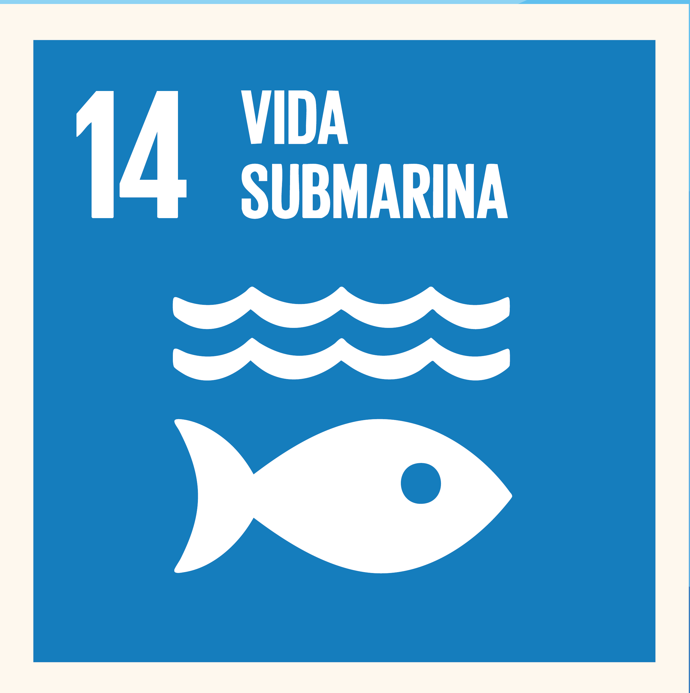

Sobre AquaKidi
AquaKidi nace con el sueño de llevar a los niños y niñas de 7 a 10 años a un viaje mágico por el mundo marino de Colombia. Queremos que aprendan sobre los ecosistemas y los animales que habitan nuestros mares de una forma divertida, visual y fácil de entender.
Nuestras diseñadoras
Natalia González Araque
Amme Tanisha Jay Jackson
Objetivo de Desarrollo Sostenible

Trabajamos con el ODS 14: "Vida submarina", fomentando la conservación de los ecosistemas marinos y el uso sostenible de los recursos del océano.